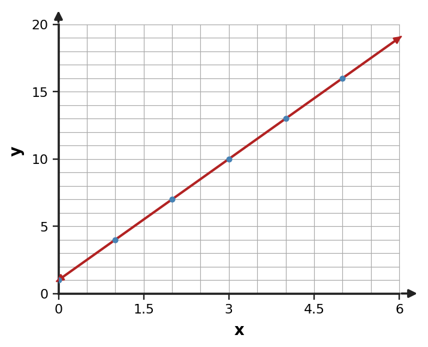

Use the scatterplot shape and the changing pattern to choose a reasonable model family. Give one reason.

Use the scatterplot shape and the changing pattern to choose a reasonable model family. Give one reason.
A linear model is reasonable for the displayed pattern.
A storage model is $V(t)=120-6t$ for $0\le t\le15$. Predict the value at $t=9$ and interpret the result.
A storage model is $V(t)=120-6t$ for $0\le t\le15$. Predict the value at $t=9$ and interpret the result.
$V(9)=66$; the model predicts a value of 66 units at time 9.
A fitted model describes plant height for days 0 through 30. Explain why a prediction at day 300 should be treated cautiously even if the formula can be evaluated. Use the size of the domain extension in your critique.
A fitted model describes plant height for days 0 through 30. Explain why a prediction at day 300 should be treated cautiously even if the formula can be evaluated. Use the size of the domain extension in your critique.
Day 300 is far outside the observed/justified domain, so conditions and growth behavior may no longer match the model assumptions.
A linear model predicts water depth from time while a tank drains. State one assumption needed for a constant-rate linear model to remain reasonable. Explain how violating that assumption would appear in the data.
A linear model predicts water depth from time while a tank drains. State one assumption needed for a constant-rate linear model to remain reasonable. Explain how violating that assumption would appear in the data.
One defensible assumption is that the outflow rate remains approximately constant over the modeled interval.
A model predicts $y=4x+1$. For the observed point $(3,11)$, compute observed minus predicted and say whether the model underpredicts or overpredicts.
A model predicts $y=4x+1$. For the observed point $(3,11)$, compute observed minus predicted and say whether the model underpredicts or overpredicts.
Predicted value is 13, so residual $11-13=-2$. The model overpredicts by 2.
For a table whose first differences change but second differences are nearly constant, compare a linear model and a quadratic model. Which better matches and why?
For a table whose first differences change but second differences are nearly constant, compare a linear model and a quadratic model. Which better matches and why?
Quadratic, because nearly constant second differences support quadratic behavior; linear data require constant first differences.
A linear model fits early measurements, but later output ratios stabilize near 1.2. What model revision should be investigated, and what pattern would support it?
A linear model fits early measurements, but later output ratios stabilize near 1.2. What model revision should be investigated, and what pattern would support it?
Investigate an exponential model; an approximately constant ratio near 1.2 would support it.
A value model is $V(t)=900(0.88)^t$. Interpret 900 and 0.88 in context.
A value model is $V(t)=900(0.88)^t$. Interpret 900 and 0.88 in context.
900 is the starting value; 0.88 means 88% remains each time unit, a 12% decrease.
Write a linear rule that exactly fits the data, then state the domain represented by the table.
| $x$ | -2 | 0 | 2 | 4 |
|---|---|---|---|---|
| $y$ | 7 | 3 | -1 | -5 |
Write a linear rule that exactly fits the data, then state the domain represented by the table.
| $x$ | -2 | 0 | 2 | 4 |
|---|---|---|---|---|
| $y$ | 7 | 3 | -1 | -5 |
$y=-2x+3$; the displayed data use $-2\le x\le4$ at the listed inputs.
Choose a model family for the data and state the evidence that supports it.
| $x$ | 0 | 1 | 2 | 3 | 4 |
|---|---|---|---|---|---|
| $y$ | 3 | 6 | 12 | 24 | 48 |
Choose a model family for the data and state the evidence that supports it.
| $x$ | 0 | 1 | 2 | 3 | 4 |
|---|---|---|---|---|---|
| $y$ | 3 | 6 | 12 | 24 | 48 |
Exponential; consecutive outputs have a constant ratio of 2.
Use the scatterplot shape and the changing pattern to choose a reasonable model family. Give one reason.

Use the scatterplot shape and the changing pattern to choose a reasonable model family. Give one reason.
A quadratic model is reasonable for the displayed pattern.
A savings model is $S(t)=40(1.05)^t$ for $0\le t\le6$. Predict $S(2)$ and interpret the result.
A savings model is $S(t)=40(1.05)^t$ for $0\le t\le6$. Predict $S(2)$ and interpret the result.
$S(2)=44.1$; the model predicts 44.1 units after 2 time periods.
A fitted model describes plant height for days 0 through 30. Explain why a prediction at day 300 should be treated cautiously even if the formula can be evaluated. Name one biological condition that might change outside the observed window.
A fitted model describes plant height for days 0 through 30. Explain why a prediction at day 300 should be treated cautiously even if the formula can be evaluated. Name one biological condition that might change outside the observed window.
Day 300 is far outside the observed/justified domain, so conditions and growth behavior may no longer match the model assumptions.
A linear model predicts water depth from time while a tank drains. State one assumption needed for a constant-rate linear model to remain reasonable. State the interval over which you would expect the assumption to be safest.
A linear model predicts water depth from time while a tank drains. State one assumption needed for a constant-rate linear model to remain reasonable. State the interval over which you would expect the assumption to be safest.
One defensible assumption is that the outflow rate remains approximately constant over the modeled interval.
A model predicts $y=0.5x+4$. For the observed point $(8,9)$, compute observed minus predicted and say whether the model underpredicts or overpredicts.
A model predicts $y=0.5x+4$. For the observed point $(8,9)$, compute observed minus predicted and say whether the model underpredicts or overpredicts.
Predicted value is 8, so observed minus predicted is 1. The model underpredicts by 1.
For data that decrease by about 15% each equal time interval, compare a linear and an exponential model. Which better matches the stated pattern and why?
For data that decrease by about 15% each equal time interval, compare a linear and an exponential model. Which better matches the stated pattern and why?
Exponential, because repeated percent decrease is multiplicative.
A linear model fits the first few points, but later measurements have a nearly constant ratio of 1.2. What model revision should be investigated?
A linear model fits the first few points, but later measurements have a nearly constant ratio of 1.2. What model revision should be investigated?
Investigate an exponential model because the later data show a nearly constant multiplicative ratio.
A service cost is $C(h)=15+4h$. Interpret 15 and 4 in context.
A service cost is $C(h)=15+4h$. Interpret 15 and 4 in context.
15 is the fixed starting charge; 4 is the cost added per hour.
A device is worth 1200 dollars and loses 15% of its value each year. Write an exponential model for its value after $t$ years.
A device is worth 1200 dollars and loses 15% of its value each year. Write an exponential model for its value after $t$ years.
$V(t)=1200(0.85)^t$.
For $P(t)=1200(0.92)^t$, state the percent change per time unit and whether the model is growth or decay.
For $P(t)=1200(0.92)^t$, state the percent change per time unit and whether the model is growth or decay.
8% decrease per time unit; exponential decay.
Use $V(t)=200(0.8)^t$ to predict $V(3)$.
Use $V(t)=200(0.8)^t$ to predict $V(3)$.
$V(3)=200(0.512)=102.4$.
A projectile is modeled by $h(t)=-5(t-2)^2+25$. State the maximum height and when it occurs.
A projectile is modeled by $h(t)=-5(t-2)^2+25$. State the maximum height and when it occurs.
Maximum height 25 at $t=2$.
A height model is $h(t)=-2(t-1)(t-7)$. Find the zeros and interpret them in context.
A height model is $h(t)=-2(t-1)(t-7)$. Find the zeros and interpret them in context.
Zeros $t=1$ and $t=7$; at those modeled times the height is 0.
A rectangular garden has width $x$ and length $20-x$. Write a quadratic area model and state a reasonable domain.
A rectangular garden has width $x$ and length $20-x$. Write a quadratic area model and state a reasonable domain.
$A(x)=x(20-x)=-x^2+20x$ with $0\lt x\lt 20$.